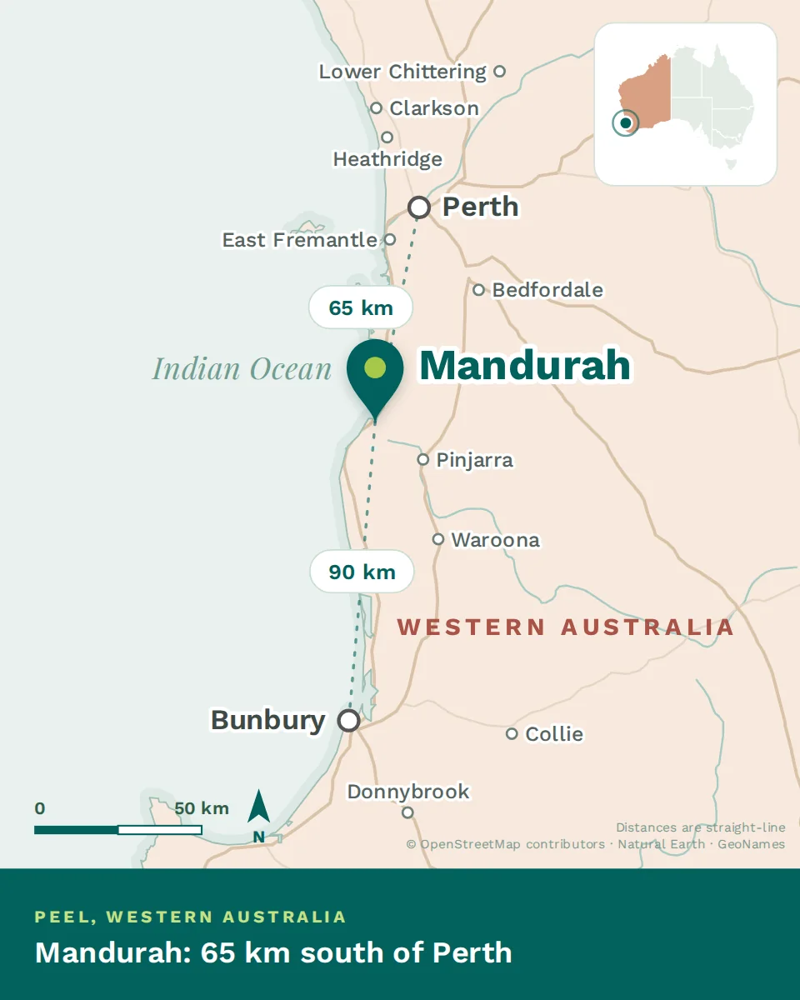

Mandurah makes sense once you see it is built around an estuary, not a high street. Where people live, which water they use and how long anything takes all follow from that.
The shape of the place

Where Mandurah sits, with the straight-line distance to Perth and Bunbury
The city wraps the mouth of the Peel-Harvey estuary, one of the largest in the country, where the Serpentine and Murray rivers meet the sea. Canals thread the newer suburbs, an artificial channel — the Dawesville Cut — flushes the estuary to the ocean, and a long dune coast runs south. The centre and its marina sit on the water; the suburbs spread north and south along both the estuary and the coast.
In practice, your side of the water sets your life: canal or estuary for flat water and boats, the ocean side for surf and beaches, the rail corridor for the Perth commute.
~72 km
South of Perth
~90,000
Greater Mandurah
2×
Sydney Harbour — the estuary
The seasons
This is a Mediterranean climate, close to Perth’s: long hot dry summers and mild, wet winters. The estuary and the reliable afternoon sea breeze — the local “Fremantle Doctor” — are what take the edge off January.
Summer — Dec to Feb
Hot and dry, often well into the 30s, cooled most afternoons by the sea breeze.
Autumn — Mar to May
The best of it: warm water, settled days and the crowds gone.
Winter — Jun to Aug
Mild and wet, with storms off the Indian Ocean. Cool, not cold.
Spring — Sep to Nov
Wildflowers inland and the first swimmable days by the end of it.
How the city got here
Long before
Bindjareb Noongar country
The estuary is Bindjareb country, part of the wider Noongar nation of the south-west, lived on and fished for tens of thousands of years. Pinjarra, inland, carries a difficult and important history the region does not hide.
19th century
An estuary settlement
European settlement followed the fishing and the sheltered water. For a long time Mandurah stayed small — a crabbing and holiday place more than a city.
1990s
The Cut, and the canals
The Dawesville Cut opened to flush the estuary, and canal estates reshaped the waterfront. Mandurah began to grow in earnest.
2007 onward
The railway, and a real city
The Perth-to-Mandurah line put the CBD under an hour away, the population climbed, and the holiday town became somewhere to live.
Orientation, in one line
A city on one of the country’s biggest estuaries, an hour south of Perth, warm and coastal and still growing. Decide which water you want to live near, and the rest of the map follows.